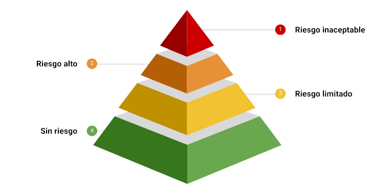
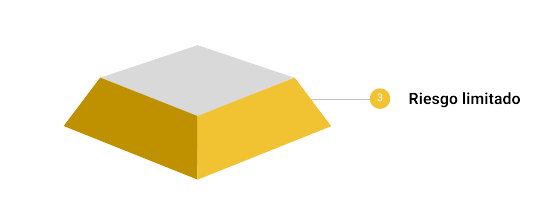
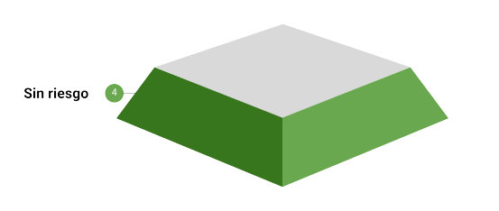

Ley de IA de la UE#
2024-10-28
La Ley de Inteligencia Artificial de la Unión Europea entró en vigor en agosto de 2024 y es de obligado cumplimiento en los 27 estados miembros. Presenta un enfoque horizontal, lo cual quiere decir que se aplica en todos los sectores (excepto el militar), incluidos aquellos que cuentan ya con sus propias regulaciones (como por ejemplo los dispositivos médicos).
Esta ley pretende mitigar los riesgos que la Inteligencia Artificial puede suponer para la salud o la seguridad de las personas, así como para sus derechos fundamentales como ciudadanos. Una IA más segura significa menos accidentes y por tanto mayor confianza en esta tecnología. Lo cual incentivará su uso por parte de las empresas y los usuarios, redundando en beneficio de la economía y de la sociedad.
La UE ya dispone en cualquier caso de leyes que protegen a los ciudadanos. ¿Por qué añadir una nueva? Por las particularidades de la IA, que hacen que las regulaciones actuales sean difíciles de aplicar: opacidad (no podemos saber con exactitud cómo se produjo un resultado), complejidad (no podemos entender cómo funciona la IA), impredecibilidad (no podemos estar seguros de los resultados) y adaptabilidad (no podemos asegurar que los resultados serán consistentes después de que el sistema sea implementado y siga aprendiendo).
La Ley de IA se aplica a todos los actores en la cadena de valor, desde los que construyen los sistemas de IA hasta los que los importan, distribuyen o implementan las soluciones, ya sean entidades privadas o instituciones públicas, dentro de la Unión Europea o fuera de la misma si los sistemas son utilizados en la UE.
Las obligaciones para todos estos actores se distribuyen de acuerdo a la siguiente pirámide de riesgos.

Riesgo inaceptable: usos de la IA totalmente prohibidos.
Riesgo alto: los sistemas de IA más proclives a vulnerar los derechos.
Riesgo limitado: con obligaciones limitadas.
Sin riesgo: la vasta mayoría de la IA, que se deja sin regular.
Independientemente del riesgo, todos los proveedores e implementadores de IA tienen la obligación de proveer a su plantilla de un conocimiento básico en estos sistemas (alfabetización en IA), con una consideración especial al modo en que se usan y a quién afectan. Esta obligación es la única que cubre la totalidad de los usos potenciales de la IA independientemente del riesgo que entrañen.
Proveedores versus implementadores#
Se establece una distinción importante entre los proveedores (los que construyen los sistemas de IA) y los implementadores (los que las despliegan para su uso en aplicaciones concretas). En la Ley de IA la mayoría de las obligaciones recaen en los proveedores según la lógica de la seguridad en la creación de los productos. Sin embargo, como la IA no es un producto al uso, los riesgos aparecen también como consecuencia del modo de empleo.
Por ejemplo, si Microsoft vende una solución basada en IA a una compañía de seguros y dicha compañía la utiliza para conceder crédito a sus clientes, Microsoft sería el proveedor y la compañía de seguros la implementadora, cada una con su particular serie de obligaciones.
Para distinguir entre las obligaciones de ambos participantes, la Ley se basa en el concepto del objetivo al cual está destinado su uso (intended use). Las obligaciones de los proveedores se aplican dependiendo de para qué se construye el sistema, mientras que para los implementadores lo hacen dependiendo de para qué se utiliza.
Riesgo inaceptable#
Se prohíbe usar la IA para:
Prácticas de manipulación subliminal, provocando que la gente haga algo que de otra manera no haría.
Explotar las debilidades de la población vulnerable como los niños, los mayores y la gente con discapacidades, o los provenientes de entornos socioeconómicos desventajosos.
Calificar a la gente en masa, asignando una puntuación según su comportamiento y tratándola de forma diferente basándose en la misma.
Hacer perfiles de la gente y aplicar medidas predictivas, por ejemplo, para predecir el riesgo de que alguien delinca en un futuro.
Rastrear internet o grabaciones de vídeo en circuito cerrado (CCTV) de forma indiscriminada para cumplimentar bases de datos de las caras de la gente.
Inferir las emociones de la gente en el lugar de trabajo o en la escuela.
Deducir a partir de datos biométricos atributos protegidos como la raza, las opiniones políticas, creencias religiosas o filosóficas u orientación sexual.
Vigilar en masa y en tiempo real espacios públicos, una práctica conocida como identificación biométrica remota en tiempo real.
Existen excepciones a todas estas prohibiciones, pero a menos que estemos tratando de detener a un asesino en serie y tengamos autorización judicial, lo mejor es no meterse en estos terrenos. Las multas pueden llegar a los 35 millones de euros o al 7% de la facturación anual, lo que sea más alto de los dos.
Riesgo alto#
Es donde la Ley pone su atención principalmente, donde se insertan los usos de la IA que pueden suponer un riesgo para la salud, seguridad y derechos de los ciudadanos. Pueden ser sistemas incrustados en productos (como dispositivos médicos o coches) o bien en programas de software usados en áreas de gran impacto como el empleo, la educación, los servicios esenciales o la justicia.
Riesgo alto: obligaciones de los proveedores#
El conjunto de obligaciones a los que están sujetos los proveedores de sistemas de IA se resume en la llamada «declaración de conformidad». La pueden llevar a cabo ellos mismos siempre que documenten el proceso y puedan demostrar conformidad con las siguientes obligaciones:
Un sistema de gestión de riesgos para identificar, documentar y mitigar los riesgos de forma continua.
Medidas de gobernanza de los datos con los que se han entrenado los modelos, para asegurar que los mismos no están sesgados.
Elaboración de documentación técnica y registro automatizado que permita la trazabilidad para el caso en que algo vaya mal.
Riesgo alto: obligaciones de los implementadores#
Imaginemos que un sistema de IA construido para identificar animales (un escenario de riesgo mínimo) es empleado para fijar las primas de las polizas de seguros de vida que comercializa una compañia aseguradora (un escenario de riesgo alto). En este caso, la empresa que construyó el modelo con buena fe no tendría obligaciones, pero sí los tendría en cambio el implementador.
Los implementadores son empresas, instituciones públicas o entidades legales que usan sistemas de IA en sus interacciones con las personas en el mercado europeo.
Primero de todo, los implementadores deben utilizar el sistema de acuerdo a las instrucciones de uso. Esto incluye el mantenimiento de un registro automático y la monitorización continua para detectar un mal uso. En caso de una incidencia seria, deben informar tanto al proveedor como a las autoridades.
Los implementadores que utilizan sistemas de IA con trabajadores, por ejemplo para asignar tareas o para monitorizar rendimientos, tienen que notificar a los trabajadores que serán objeto de dicha supervisión por parte de una IA. En general, todos los implementadores que utilicen sistemas de IA para tomar decisiones referidas a personas, tienen la obligación de informar a dichas personas. Este sería el caso, por ejemplo, cuando el sistema de IA decide la prima del seguro de vida de un cliente o si un alumno ha sido admitido o no en un centro educativo.
Las autoridades públicas o los implementadores que proveen de servicios básicos a la sociedad, como créditos o seguros de salud, tienen que llevar a cabo una evaluación del impacto en derechos fundamentales. Dicha evaluación es similar a la que se lleva a cabo bajo la ley de protección de datos personales, y su objetivo es asegurar que cuando se emplea en contextos específicos (como en comunidades marginales) el sistema de IA no vulnera sus derechos. Para facilitar el escrutinio público, las autoridades públicas, como la Policía o las entidades migratorias, tienen que registrar el uso de sistemas en IA en la base de datos de la Unión Europea.
Es importante advertir que la distinción entre proveedores e implementadores no siempre será clara. Un implementador que lleva a cabo modificaciones sustanciales en un sistema de IA, cambiando su propósito original, se vuelve un proveedor con sus consiguientes obligaciones de proveedor.
Riesgo limitado#

Algunos sistemas de IA, por su propia naturaleza, pueden ser usados para engañar o manipular a la gente. Estos sistemas, como los empleados para generar imágenes, no son en sí mismos peligrosos, más bien es su uso el que conlleva riesgos en ciertos contextos y bajo ciertas condiciones. Para los desarrolladores de bots conversacionales (chatbots) e IA generativa, la Ley prevé obligaciones básicas que aumentan la transparencia hacia el usuario final.
Los proveedores de sistemas de IA destinados a usuarios finales, como los chatbots, deben asegurarse de que los que los emplean sean informados de que interaccionan con una IA, no una persona. El mismo robot deberá informarte de que es una IA, no un asistente humano.
Los proveedores de sistemas que generan contenido en formato audio, imágenes, vídeo o texto deben asegurarse de que dicho contenido se etiquete como tal: «Generado por IA».
Sin riesgo#

La mayoría de los casos de uso son benignos y no presentan riesgos. Aparte de las obligaciones relativas a la alfabetización en la IA que aplican a todo el espectro, el uso de estos sistemas no está regulado por la Ley de IA.
Por ejemplo, el uso de la IA para optimizar el riego de cultivos o para identificar un pájaro en la naturaleza.
Modelos de IA de propósito general#
Más allá de la pirámide de riesgos, la Ley de IA contempla obligaciones especiales para los modelos de IA de propósito general (General Purpose AI Models – GPAI models).
Se hace una distinción importante entre «sistemas de IA» y «modelos de IA».
Sistemas de IA: son productos listos para su despliegue en el mercado. Por ejemplo, ChatGPT, un chatbot con una interfaz de usuario que proporciona salidas concretas basadas en las entradas del usuario.
Modelos de IA: son los cerebros que están detrás de los sistemas de IA. Por ejemplo, los modelos de la serie GPT de OpenAI (GPT-3.5, GPT-4 y GPT-4o) que alimentan a ChatGPT.
La cuestión es que estos modelos pueden alimentar a millones y millones de sistemas de IA, y si algo va mal en ellos podría producirse lo que la Ley llama «riesgos sistémicos». Es por ello que se introducen una serie de reglas diferentes para los modelos de IA de propósito general.
En el mundo de la IA, dos conceptos habitualmente utilizados a la hora de clasificar los modelos son el número de parámetros, que da una medida del tamaño, y el número de operaciones de coma flotante durante el entrenamiento, que aproxima su rendimiento. Es necesario identificar ambos valores para determinar las obligaciones a cumplir por parte de los desarrolladores de los modelos de propósito general.
Para empezar han de preparar documentación adecuada y proveer a los integradores con suficiente información para que los implementen de forma segura. Además, si el modelo traspasa las \(10^{25}\) operaciones de coma flotante, será automáticamente clasificado como de riesgo sistémico, y deberán notificarlo a la Comisión Europea al tiempo que se realizan controles más estrictos en cuanto a seguridad.
Se estima que uno de los modelos más potentes del momento, GPT-4, necesitaría 10 veces más operaciones para superar el umbral mencionado, no estaría por lo tanto contemplado como de riesgo sistémico. Y es que la Ley de IA intenta adelantarse a la próxima generación de modelos, previsiblemente más potente y con más capacidad de producir daños.
Conclusiones#
En definitiva, riesgos inaceptables y prácticas prohibidas: abstenerse. Usos de riesgo alto: los proveedores tienen que elaborar una declaración de conformidad antes de lanzar el sistema en el mercado europeo; los implementadores también tienen que asegurarse de que el sistema se emplea de forma segura. Sistemas de riesgo limitado: chatbots, deep fakes y en general el contenido generado por IA debe ser etiquetado como tal. Sistemas sin riesgo: se debe disponer de un nivel adecuado de conocimiento en cuanto a la IA. De forma separada, a los modelos de propósito general se les aplican reglas basadas en su tamaño y rendimiento, con la mayoría de las obligaciones preparadas para la siguiente generación de modelos, los cuales podrían presentar riesgos sistémicos.
(Imagen de portada de simpson33 en iStock.)